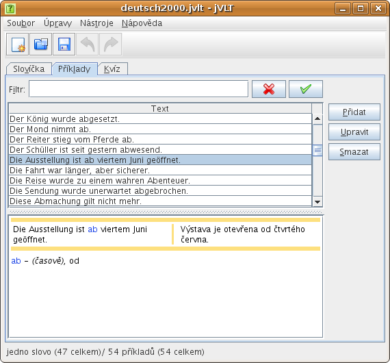
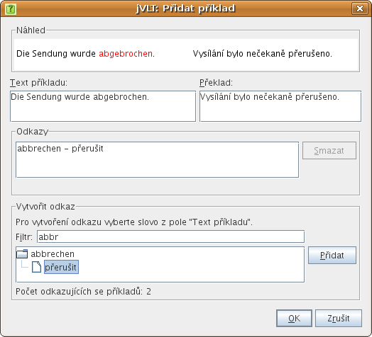

jVLT – nástroj pro učení se slovíček
Příklady

Přidávání příkladů
Při vytváření příkladu je třeba provést dva základní kroky:- Zadejte text příkladu a (volitelně) překlad.
- Vytvořte odkazy na slova ve vašich slovíčkách.
Chcete-li vytvořit odkaz na slovo, musíte nejdříve vybrat v textu příkladu pasáž, kterou chcete na slovo odkázat. Tento řetězec se automaticky vloží do textového pole „Filtr“ v oddílu dialogu nadepsaném „Vytvořit odkaz“. Nemá-li vybraný řetězec vhodnou podobu, je možné ho upravit. Kupříkladu, máte-li příklad obsahující řetězec „dělal“, který chcete odkázat na slovo „dělat“, pak budete muset změnit automaticky vložený řetězec „dělal“ na „dělat“.
Poté, co v poli filtru stisknete klávesu „Enter“, čímž filtr použijete, objeví se seznam vyhovujících slov. Každá položka (slovo) obsahuje seznam subpoložek, které představují významy tohoto slova. Chcete-li vytvořit odkaz, musíte vybrat jeden z významů jednoho ze slov a stisknout tlačítko „Přidat“. Chcete-li odkaz odstranit, vyberte ho ze seznamu pod textovými poli „Text příkladu“ a „Překlad“ a klikněte na „Odstranit“.
